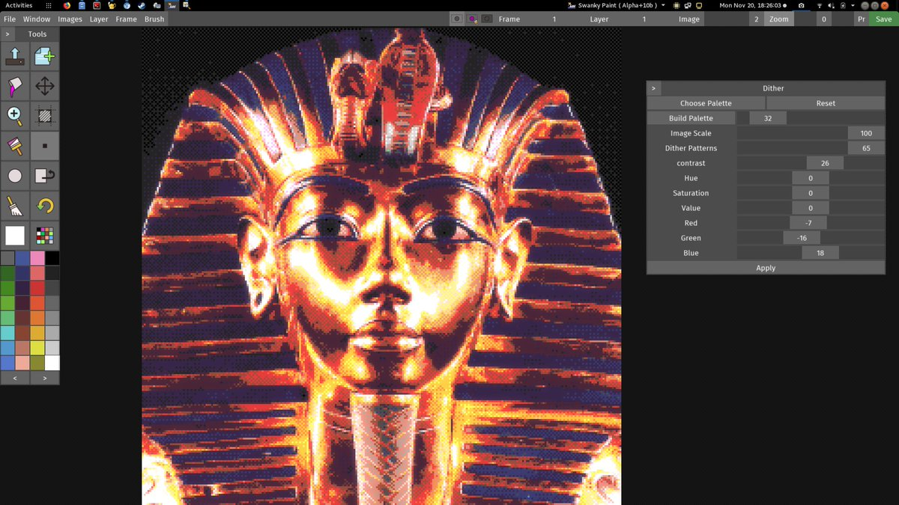

https://twitter.com/Tanukitsune/status/932914718246932481 @Tanukitsune Stage one is a test of endurance as you repeatedly hit the retry button.
Well, I would go with Punisher... but I'd be thinking of Rorschach.
Swanky Paint is gaining some real time dynamic palette and dithering options when loading in a 24bit image. Before it just made a rather bad guess, now it makes good guesses :)
https://notshi.github.io/printscreen/blog/2017-11-20-18-26-43-fatso-kriss/ 
This is one of my favourite arcade games and I have never actually seen a real machine. https://twitter.com/ArcadeClubTech/status/932639492531544064
Excite bike is for 'merkins I think you will find that the Brits played Kikstart (2).
I don't think I even knew anyone who had a NES back in the 80s, it was 48Ks and C64s all the way down. https://twitter.com/RetEvents/status/932964014845513729
@magic_bane @CharlotteGore Doesn't matter, any hardware can fail so you never get to be sure which part of the chain is broken until you test every damn part.
@magic_bane @CharlotteGore Ah, I thought you picked up one second hand.
Usually a power problem then but I'm sure you know that.
@magic_bane @CharlotteGore I mean, did you managed to get one that had been previously used...
@magic_bane @CharlotteGore Fail under heavy load?
Isn't that how bitcoin mining breaks cards?
https://twitter.com/pixelvision8/status/930983113542504448 @pixelvision8 If you want an algorithm then a travelling salesman in RGB space has worked well for me.
I just do a simple greedy algo starting from each index and then pick the shortest of these paths as the palette order.
One of the best things about this movie is the distance fog darkness combined with untextured levels lit by a handful of primary colour lights.
Also plenty of lens flare. https://twitter.com/OnePerfectShot/status/930982518949638144
https://twitter.com/Tony_Gowland/status/930471365148381184 @FreakyZoid I'm pretty certain we are still on track for a #VRXMAS as well. I was hoping for last year but this year looks like the one. Some actual VR games releasing in the runup period, affordable hardware, everything points to now.
@CharlotteGore Have you tried Zack and Wiki? It is the most "modern" point and click I've played. Not everything they do works but it is a really interesting attempt to do something different.
Although it could do with having all the motion waggling removed, like so many other Wii games.
https://twitter.com/m4de/status/930358034458644480 @m4de @LospecOfficial If you are using photoshop for that sort of workflow then have you seen this technique?
http://danfessler.com/blog/hd-index-painting-in-photoshop
A bit of a pain in that you need to setup one magic layer per color ramp but it has interesting results.
https://twitter.com/wetgenes/status/930398146060083200 @m4de @LospecOfficial Have actually just been taking a look at algorithms to build a palette and remap.
Created a slightly different algorithm to what I've used in the past and what I see others use. Cleaning it up into a library and beginning to add more documentation here -> https://github.com/xriss/gamecake/blob/master/lua_grd/code/swankyquant.h
https://twitter.com/m4de/status/930394608667955202 @m4de @LospecOfficial Yup, dev and there may be some tweaks that can be made to help with your process.
Apart from anything else most of the core image code is opensource and available via a Lua interface so you could script up a build process for a lot of the manipulation.
https://twitter.com/m4de/status/928927793714475009 @m4de @LospecOfficial What are you trying to do?
Maybe http://paint.wetgenes.com/ can be of some use?
I keep tilting my laptop screen up and down to try and read the words under the shine.
There is probably a texture mapping lesson in that somewhere. https://twitter.com/romero/status/929691618877362176